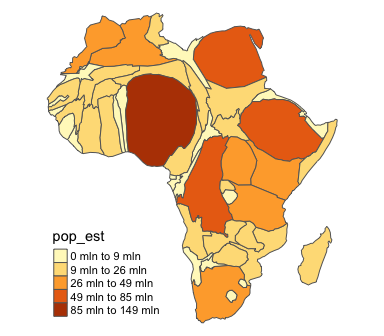
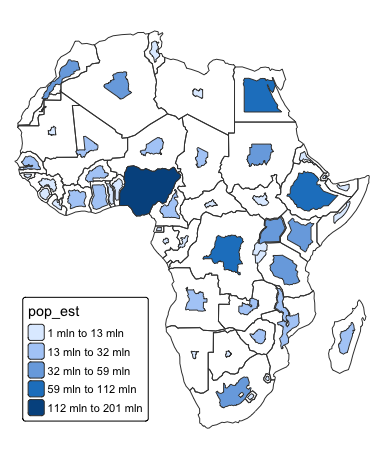
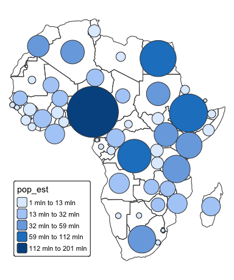

cartogram is an R package that implements methods for generating continuous area cartograms (based on the rubber sheet distortion algorithm by Dougenik et al., 1985), non-contiguous area cartograms (Olson, 1976), and non-overlapping circles cartograms (Dorling et al., 1996).
Installation
You can install the cartogram package from CRAN as follows:
install.packages("cartogram")To upgrade to the latest development version of cartogram, install the package remotes and run the following command:
remotes::install_github("sjewo/cartogram")Examples
Continuous Area Cartogram
library(cartogram)
library(sf)
#> Linking to GEOS 3.13.0, GDAL 3.8.5, PROJ 9.5.1; sf_use_s2() is TRUE
library(tmap)
data("World")
# Keep only the African continent
afr <- World[World$continent == "Africa", ]
# Project the map
afr <- st_transform(afr, 3395)
# Construct continuous area cartogram
afr_cont <- cartogram_cont(afr, "pop_est", itermax = 5)
# Plot the cartogram
tm_shape(afr_cont) +
tm_polygons("pop_est",
fill.scale = tm_scale_intervals(style = "jenks")) +
tm_layout(frame = FALSE,
legend.position = c("left", "bottom"))
Non-contiguous Area Cartogram
library(cartogram)
library(sf)
library(tmap)
data("World")
# Keep only the African continent
afr <- World[World$continent == "Africa", ]
# Project the map
afr <- st_transform(afr, 3395)
# Plot the original map boundaries
tm_shape(afr) +
tm_borders() +
# Add the the cartogram
tm_shape(cartogram_ncont(afr, "pop_est")) +
tm_polygons("pop_est",
fill.scale = tm_scale_intervals(style = "jenks")) +
tm_layout(frame = FALSE,
legend.position = c("left", "bottom"))
Non-Overlapping Circles Cartogram
library(cartogram)
library(sf)
library(tmap)
data("World")
# Keep only the African continent
afr <- World[World$continent == "Africa", ]
# Project the map
afr <- st_transform(afr, 3395)
# Plot the original map boundaries
tm_shape(afr) +
tm_borders() +
# Add the the cartogram
tm_shape(cartogram_dorling(afr, "pop_est")) +
tm_polygons("pop_est",
fill.scale = tm_scale_intervals(style = "jenks")) +
tm_layout(frame = FALSE,
legend.position = c("left", "bottom"))
Use multiple CPU cores
library(cartogram)
library(sf)
library(tmap)
library(future)
library(future.apply)
library(parallelly)
library(progressr)
data("World")
# Keep only the African continent
afr <- World[World$continent == "Africa", ]
# Project the map
afr <- st_transform(afr, 3395)
# Create cartogram using 2 CPU cores on the local machine
# This can speed up computation for larger datasets.
# Set show_progress to TRUE for a progress indicator.
afr_cont <- cartogram_cont(afr, weight = "pop_est",
itermax = 5,
n_cpu = 2,
show_progress = FALSE)
# Plot the cartogram
tm_shape(afr_cont) +
tm_polygons("pop_est",
fill.scale = tm_scale_intervals(style = "jenks")) +
tm_layout(frame = FALSE,
legend.position = c("left", "bottom"))
Acknowledgements
The non-contiguous area cartogram and non-overlapping circles cartogram functionalities include major code contributions from @rCarto and @neocarto.
@nowosad contributed to the package by transitioning it to use the sf package and by enhancing the documentation, a task further supported by documentation improvements from @oliveroy.
The functionality to utilize multiple CPU cores was contributed by @e-kotov.
References
This package implements algorithms based on the following seminal works:
- Dorling, D. (1996). Area Cartograms: Their Use and Creation. In Concepts and Techniques in Modern Geography (CATMOG), 59.
- Dougenik, J. A., Chrisman, N. R., & Niemeyer, D. R. (1985). An Algorithm To Construct Continuous Area Cartograms. In The Professional Geographer, 37(1), 75-81.
- Olson, J. M. (1976), Noncontiguous Area Cartograms. The Professional Geographer, 28: 371–380. doi:10.1111/j.0033-0124.1976.00371.x